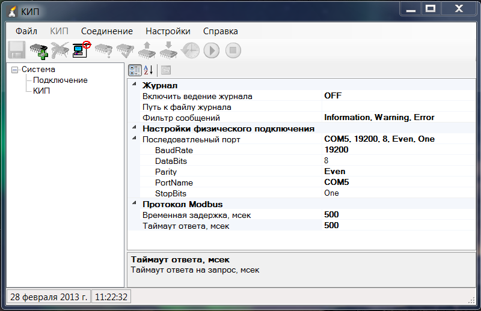

Автономный режим – это режим работы при отсоединённом физическом устройстве. Для начала работы
необходимо создать физическое устройство. Для этого в меню «Файл» выбираем меню «Создать» (или
эквивалентной кнопкой на панели инструментов ), при этом выводится диалог выбора типа устройства БИ(У).
После выбора типа устройства нажимаем кнопку «ОК». Созданное виртуальное устройство может быть
редактировано и сохранено в виде файла. Для удаления открытого виртуального устройства
необходимо выбрать в «Файл» выбираем пункт «Закрыть» или нажать эквивалентную кнопку на панели инструментов.
Для того, что бы открыть образ устройства сохранённого в файле необходимо выбрать в меню «Файл» пункт «Открыть».
В предложенном диалоге выбрать файл образа (*.kip) и открыть его. Открыть файл можно также и из командной
строки указав в качестве аргумента путь к файлу.Работа с физическим устройством.
Для работы с платой БИ(У) в составе устройства НГК-КИП-СМ(У) необходимо настроить параметры соединения.
Для этого, в левом окне выбрать элемент дерева «Соединение», развернув, если это необходимо, дерево
нажатием «плюсика» около элемента дерева «Система». В левом окне отобразятся настройки соединения (рис. 2).
Здесь настраиваем последовательный порт (COM) к которому подключено физическое устройство НГК-КИП-СМ(У),
в дальнейшем именуемое как «физическое устройство».

Рис.2 Настройки соединения
Необходимо выбрать свойство
«Последовательный порт» и развернуть список, как показано на рисунке. Здесь настраиваем наименование порта
к которому подключено физическое устройство. В данном случае это «COM5». Если необходимо настраиваются и
другие параметры отображённые в списке. Однако, по умолчанию, для работы с физическим устройством необходимо
оставить настройки как на рисунке. Существует альтернативный способ редактирования параметров порта (рис. 3).
Для этого выбираем «Последовательный порт», при этом появляется в правом углу кнопка с чёрным треугольником.
Щелкаем по этой кнопке и появляется выпадающее окно с настройками порта. Здесь, в выпадающем списке «Порт»
перечислены все зарегистрированные в операционной системе последовательные порты. Выбираем необходимый порт
из списка и нажимаем кнопку «ОК», в противном случае для отмены - кнопку «Esc». После настройки последовательного
порта переходим к категории «Протокол Modbus». Здесь можно время таймаута не ответа на запрос (устанавливается в мсек)
и время задержки при широковещательных командах (при работе с физическим устройством не используется).
Необходимо установить свойство «Включить ведение журнала» в категории «Журнал» в состояние «OFF», т.е. журнал
не ведётся. В противном случае необходимо следить за размером файла журнала, т.к. он может достичь максимального размера.
Что-бы этого не произошло, необходимо очищать его содержимое при помощи любого текстового редактора путём
удаления его содержимого. После того, как было настроено соединение, для подключения к физическому устройству
открываем порт. Для этого на панели инструментов нажимаем кнопку: . Если ни каким проблем не возникло,
то порт открыт. После того как порт открыт, редактирование параметров соединения запрещается. Что-бы изменить
настройки закрываем порт, для этого нажимаем кнопку: . Аналогичные действия можно провести из меню «Соединения».
Приступаем к работе с физическим устройством. Для того, что бы определить тип платы БИ(У) в составе НГК-КИП-СМ(У)
необходимо нажать кнопку на панели инструментов. Появиться окно, в котором будет информация о найденном устройстве.
Если физическое устройство опознано, то окно будет подобно окну на рисунке 4. В предложенном диалоге нужно выбрать «Да»,
после чего будет создано виртуальное устройство соответствующее физическому. Для заполнения виртуального устройства
реальными данными физического, необходимо произвести чтение устройства. Это делается при помощи кнопки: или соответствующего
меню «КИП». После выполнения чтения из устройства имеем актуальные данные. Увидеть их можно, выбрав в дереве левого окна
элемент «КИП». Можно редактировать данные, которые доступны для редактирования. Однако, все изменения будут только в
виртуальном устройстве. Для того, что бы произвести запись в физическое устройство, необходимо выбрать записываемый
параметр в списке, щёлкнуть правой кнопкой мыши и в появившемся контекстном меню выбрать «Записать параметр».
Если редактировалось множество параметров, то можно записать их все нажатием кнопки . Здесь, следует учесть,
что производиться запись не только модифицированных параметров, но запись всех параметров.
Рассмотрим назначение остальных кнопок на панели инструментов.
Кнопка «Проверить инициализацию устройства» . Данная функция необходима при производстве устройства.
Если в устройстве не установлены данные производителя, то предлагается их ввести и сохранить в устройстве.
Это возможно сделать только один раз. После инициализации устройства, при верификации,
будет возвращаться сообщение «Устройство инициализировано».
Кнопка «Синхронизировать время» . Данная функция записывает системное время и дату в физическое устройство.
Кнопки «Старт» и «Стоп» обеспечивают режим постоянного мониторинга параметров физического устройства.
В этом режиме устройство постоянно считывается.
Кнопка «Сохранить» . Позволяет сохранить виртуальное устройство в файл.